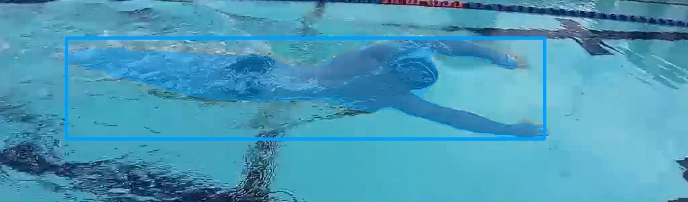
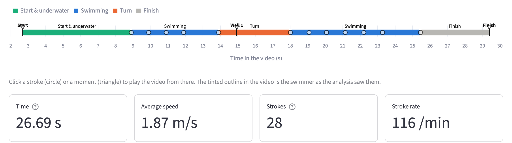

Swimline은 평범한 휴대폰 자유형 영상을 별도 입력 없이 레이스 데이터로 바꿔주는 분석 도구입니다. 구간 기록, 속도, 스트로크 수, 스트로크 레이트, 스트로크당 거리, 턴 시간, SWOLF와 스트로크 인덱스를 계산하고, 근거 수치를 함께 보여주는 코칭 피드백과 개선 시뮬레이션을 제공합니다.
기성 포즈 모델은 물보라 속에서 관절을 찾지 못하기 때문에, 영상에서 안정적으로 얻을 수 있는 신호만 사용했습니다. 선수의 세그멘테이션 추적, 팔이 물 밖으로 나오는 리듬, 카메라의 패닝, 오디오 속 스타트 신호음입니다. 모든 지표는 직접 센 스트로크 수, 화면 속 스트로크 카운터, 공식 경기 기록과 비교해 검증했습니다.
일반 사람 검출기는 40프레임 중 0–3프레임에서만 선수를 찾았고, 포즈 모델은 모든 관절의 신뢰도가 약 0.35에 그쳤습니다. 카메라 패닝과 옆 레인 선수가 문제를 더 키웠습니다.
오픈 보캐뷸러리 검출기 YOLO-World("swimmer")로 SAM 2 마스크 추적의 시작점을 잡습니다. 갑자기 튀거나 부풀거나 레인 로프처럼 가늘어지는 마스크는 걸러내고, 선수를 놓치거나 벗어나면 검출 경로에서 다시 시작점을 잡습니다.
측면 촬영 영상의 92–100% 프레임에서 수동 지정 없이 선수를 추적합니다.
관절을 믿을 수 없으니 따라갈 손목이 없고, 물보라가 스트로크를 가리거나 가짜 스트로크를 만듭니다.
마스크가 자기 중심보다 위로 뻗는 정도는 팔 리커버리마다 커집니다. 자기상관으로 주기를 구하고, 신호가 주기적인 구간에서만 스트로크를 세며, 물보라에 가려진 스트로크는 리듬으로 채웁니다.
화면 속 카운터 대비 스트로크 레이트 오차 1% 이내(분당 56.2 vs 56), 스트로크 수 오차 약 2회 이내.
카메라가 선수를 따라 패닝해 화면 속 선수는 거의 움직이지 않고, 벽은 화면에 잘 잡히지 않습니다.
선수 바깥 영역의 옵티컬 플로우 중앙값, 즉 카메라 패닝을 선수의 움직임에서 빼서 방향이 바뀌는 지점을 벽으로 판단합니다. 스타트는 약 1kHz의 일정한 전자 신호음을 FFT로 찾고, 피니시는 마지막 스트로크로 추정합니다.
턴 시점 오차 0.3초 이내. NCAA 중계 영상에서는 신호음 기준 공식 구간 기록이 화면 표시 프레임과 정확히 일치했습니다.